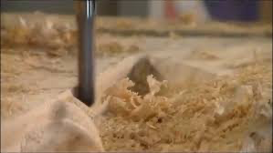

Troubleshooting¶
"Don't worry, everyone runs into problems. Here's how to fix the most common ones."

What to do when things go wrong?¶
Your first few carves will probably not be perfect, and that's okay! CNC is a process of learning and tuning. This video from Chris Powell is an excellent resource for the 10 most common issues beginners face.
Top 10 Issues and Solutions¶
Here is a list of the problems covered in the video. If you have one of these issues, jump to the timestamp to see the solution.
-
Spindle not starting (in Easel) (1:10)
- (Note: We use UGS, but this can still be a "Did you turn it on?" check!)
-
Why do my bits keep breaking? (2:26)
- Hint: Your "feeds and speeds" (how fast it moves and spins) are likely too aggressive for the bit or material.
-
Missing detail in a design (4:00)
- Hint: Your bit might be too large for the tiny details you are trying to carve.
-
Machine not connecting to your computer (6:52)
- Hint: Check your USB cable, your COM port settings in UGS, and your drivers.
-
Axis keep jamming (10:12)
- Hint: Check for-debris on the rails, loose wires, or mechanical issues.
-
Z depth or depth of cut is wrong (12:42)
- Hint: You probably set your Z-Zero incorrectly. Redo the "paper method" or Z-probe step.
-
Axis going the wrong way or design coming out mirrored (14:48)
- Hint: This is often a machine setup issue in the GRBL settings. Ask an instructor for help with this.
-
Design not cutting even or depth uneven (18:50)
- Hint: Your "spoilboard" (the board under your material) is not level, or your material is bowed.
-
Material comes loose during a job (20:02)
- Hint: Your workholding (clamps or tape) failed. You need a better method to hold it down.
-
Job keeps stopping halfway through or losing connection (21:19)
- Hint: This can be a bad USB cable, or the computer going to sleep. Disable your computer's sleep settings!
"http://CNC-Pro" not found!¶
Can't find CNC-Pro on the school network? Has your network changed?
-
Plug CNC-Pro on the network
For more ideas: Setting up WiFi and network connections on DietPi